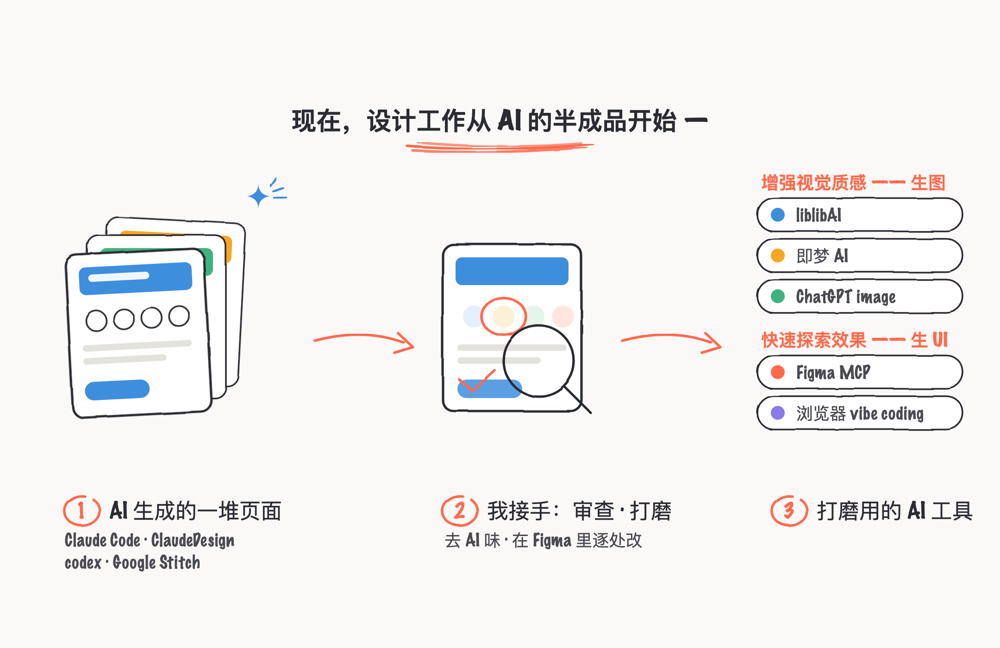
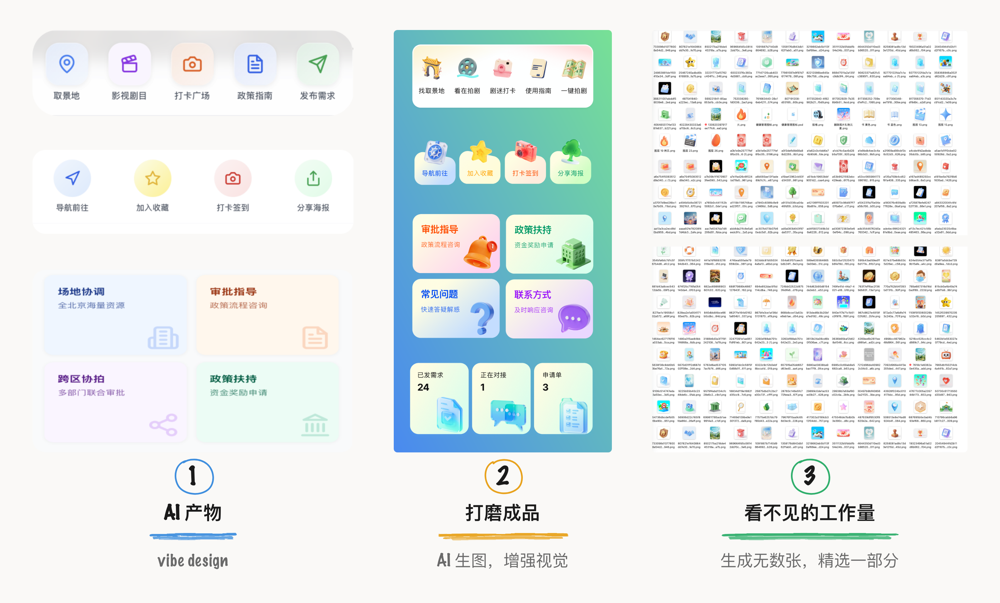
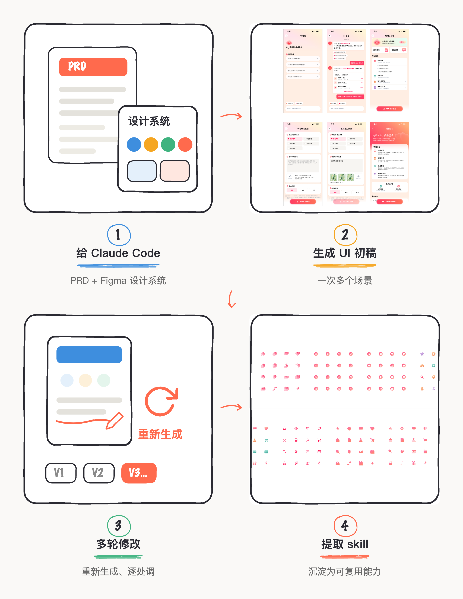
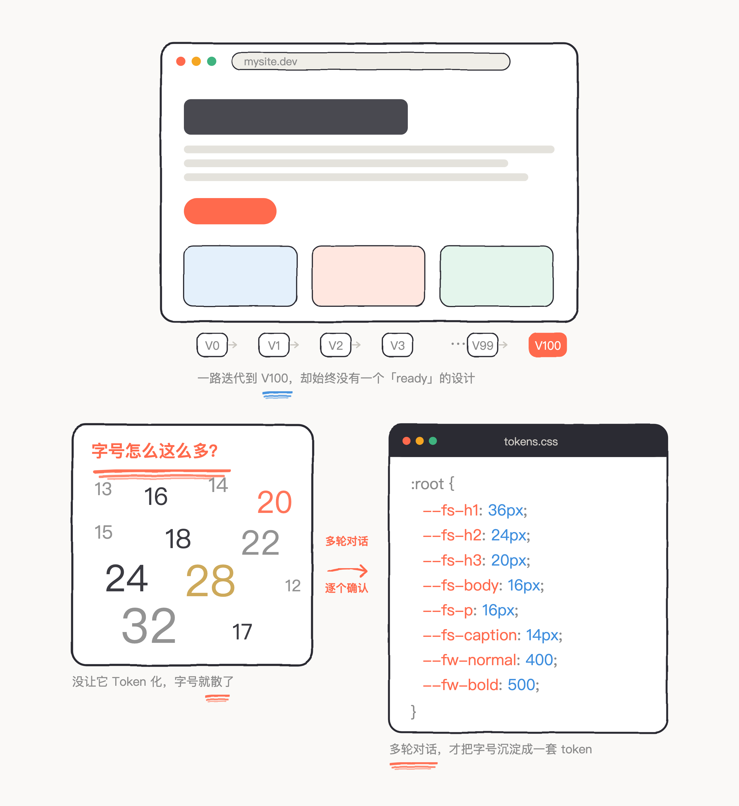

现在是从 AI 产物开始工作的方式，很少从一张空白画布开始了。
作为设计师，现在经常收到非设计师同事发来的一份 Vibe Design 产物，附带一句「帮忙把设计再优化一下」——这里的设计，通常指 UI 视觉层面。然而，AI 生成的完成度已经相当高了。
这跟几年前用前端 UI 开源模板拼出来的那种产物，本质上类似：拿现成的东西快速搭一个能看的界面。只是这一次，在生成式 AI 的加持下，风格更丰富、速度更快、平均水平也更高。于是场面变成了：一边是极快的、完成度很高的 AI 产物，一边是希望人为地去掉 AI 味、把设计标准往上再提。设计师的目标，是在 AI 产物的基础上继续打磨，投入更多，直到把它推到「无法被反驳」的程度。

vibe coding 产物
只是起点
要交付高质量的视觉设计，光靠 vibe coding 不够，得加入更多元的视觉化手段。可纯手搓又跟不上——速度大概只有 AI 的十分之一。所以最近连着几个项目，把 liblibAI、即梦 AI、ChatGPT image 这几个生图工具都用熟了，专门拿来做 3D icon、banner 这类视觉素材，出来的质感确实提升了一档。AI 辅助设计的速度和质量，已经是非 AI 时代比不了的事实。
比如一个常见任务：优化核心功能的展示样式。非 AI 时代常用的做法，是在 Figma 里手搓几种矢量风格的精美 icon；有了 AI 之后，我更倾向于直接生成一套拟物 3D 风格。
但生成不是一键的事。由于 AI 的不确定性，几乎没有一次 prompt 就能出理想效果的时候——经常是要么这里出一点瑕疵，要么整套角度不统一。通常得在生成的几十个结果里，才能挑出勉强合适的一套，再手动微调。甚至很多设计 idea，光是要用语言清楚地描述出来，也是一个反复调整的适配过程。

在 Figma 里验证
设计系统可视化
真要交付给团队、按高标准走的任务，工作场景还是落在 Figma 上。 Figma 有全套的 MCP，有些时候也会直接让 Claude Code 通过 MCP 生成初稿 UI。
有一次要优化一套 AI Chat 的对话流程，就顺手让 AI 来生成。当时在 Cursor 里同时开了两个对话，让 Claude Code 并行生成两个场景的 UI：基于 Figma 画布上已经做好的界面，读取需求文档，再一页一页生成新的视觉。这个过程挺有意思——能清楚看到 Claude Code 的 plan：它自己读取并理解设计系统、理解需求文档，然后一页页生成 UI、写回 Figma。
出来的效果还可以，60 分的满意度。结构搭得挺系统，整体风格也延续得稳，但还没到能直接用的程度，只能说至少可以在它上面继续改。把验证的过程从大到小过一遍：结构、布局、一致性，都还行；可一细看，主次、造型、渐变、颜色这些细节就明显缺质感，跟我手搓的那套 UI，根本不是一个能延续下去的设计系统。

后面让 Claude Code 继续优化，最大的卡点是——那些描述细节的 prompt，跟预期结果总是没法 100% 对上，很多时候还不如在 Figma 里直接改，省 token，也更快更准地看到效果。
还有一点更根本的问题是：AI 生成是以 token 为单位的，不是 Figma 的 Component 逻辑。 后续想整体改一处，就得让 Claude Code 重新生成一遍。对我这种「任何元素都恨不得组件化」的工作习惯来说，这反而是一种倒退。下一步打算试试 Figma 的 Agent，看它能不能自己把生成出来的 UI 组件化。
AI 给的「差不多好」
那是被动接受
我在做纯个人探索、自己验证想法的 vibe coding 过程中，会处于这种主动创造与被动选择的权衡中。AI 会一下子全给到大部分执行产物，但也会陷入一个永远在主观预期与实现过程中存在 gap，需要数次清晰地细节优化，才能达到真实的创作预期。
比如我做个人网站时，直接一段 prompt 的 vibe coding 开始，工作场景干脆直接在浏览器里。 。结果是：一开始就没有可视化的预期，然后进入无休止的迭代，V0、V1、V2、V3……一路到 V100。这有点违背以前的老习惯——过去进开发环节之前，设计是已经 ready 的；而现在变成了从构思直接跳到验证，中间那个「设计流程」的环节被跳过了。
有个小细节能说明问题：某天突然发现，字号怎么这么多种。回头一想，是因为没给 Coding Agent 提要求，它就不会主动去 Token 化，字号体系自然就散了。vibe coding 生产得很快、又不会自己停，人很容易被这种快速产物带着走，忽略掉一堆细节。所以在被 AI 诱导之前，先把目标梳理清楚，才谈得上跟 AI 好好协作。

所以设计系统这件事绕不过去。以前在 Figma 里手搓，现在改成指导 vibe coding 让 AI 做，方式变了，要管好的还是同一套东西。而先想清楚要什么、再让 AI 动手，这一步，还得自己来。
一段来自 Figma 首席产品官 Yuhki Yamashita 的文字，我觉得非常贴合目前 AI 时代的方向指引：
AI 会生成看起来正确的东西，遵循那些统计上大概有效、但很少被深入思考过的模式。一旦没人去质疑，这些默认设置就会悄悄变成产品本身。结果是海量的产品都长得像是可以互相替换的。真正的失败模式并不是能力不足，而是被动性：接受第一个建议，看起来对了就停手，因为「已经足够好了」而继续往前推。
而 craft，工艺，恰恰是主动的：是选择，而不是接受。回过头去审视每一个决策，精炼、删减、收紧，直到作品长出自己的观点，超越最初那几个版本。这不是天生的品味，而是靠一遍遍迭代锻炼出来的，直到打磨出真正属于自己的东西。